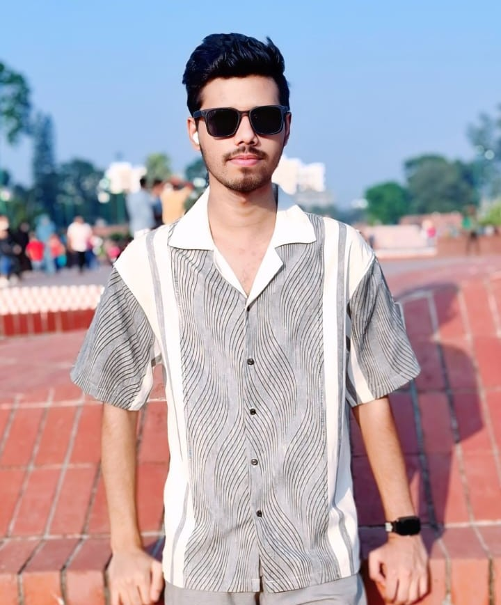

Transforming ideas into responsive and functional websites.
I build responsive and user-friendly websites that combine clean design with efficient code.

A student of the Development
Based in Dhaka, I spend my days building websites and crafting seamless user experiences. My philosophy is that great web development isn't just about functionality, but the clarity and flow it leaves behind.
When I'm not coding or optimizing interfaces, you'll likely find me experimenting with new web technologies and exploring creative ways to bring ideas online.
Interests
The Journey
Junior Frontend web Developer
Tech Global Systems
Designed and developed several practice projects including a Personal Website, Quiz App, Drag and Drop Interface, and an eCommerce layout to strengthen frontend development skills.
Frontend Developer (Self-Taught)
Personal Learning & Development
Learning and practicing modern web development with HTML, CSS, and JavaScript. Building responsive websites and improving problem-solving skills through hands-on projects.
Freelance Web Development Lead
Project X (Web Startup)
Built the end-to-end MVP for a web-based portfolio and project showcase platform, handling everything from brand identity to user interface design.
Always curious about
what's next.
I'm currently open to selective collaborations and senior roles where strategy meets craft.